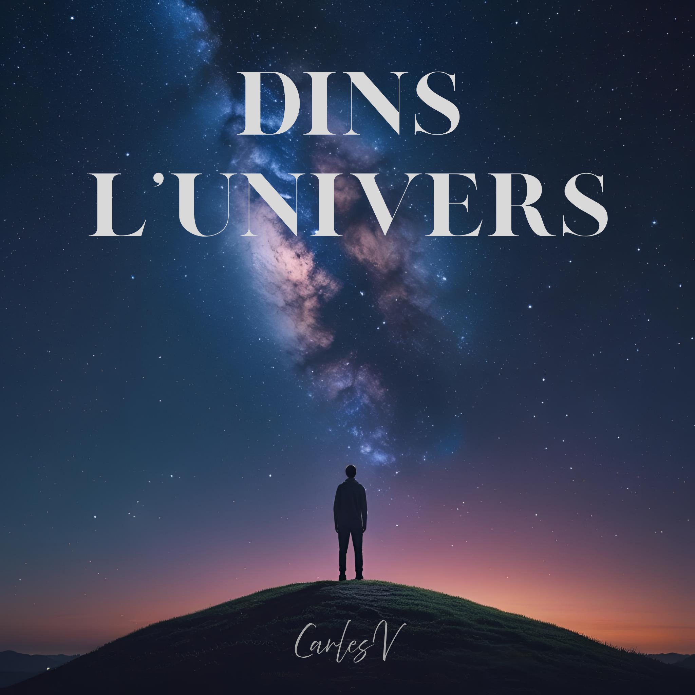

Single · 2026 · Novetat
Encara hi ets
Una cançó sobre la petjada que deixa algú estimat: els records, les coses que ens guardem i un amor que continua present encara que aquella persona ja no hi sigui.
Descobreix la cançó →Carles Vives · Projecte musical independent
Vivències que es tornen música. Lletres, melodies i un univers propi, principalment en català.
El més recent
Single · 2026 · Novetat
Una cançó sobre la petjada que deixa algú estimat: els records, les coses que ens guardem i un amor que continua present encara que aquella persona ja no hi sigui.
Descobreix la cançó →Single · 2026 · Novetat
Hi ha parts de nosaltres que encara no coneixem. «Fora de cobertura» explora aquest espai on s’acaben les certeses i els càlculs, i la identitat continua oberta al que encara podem descobrir.
Descobreix la cançó →Continua escoltant

L’àlbum · 2025 · 10 cançons
Records, família i camins que giren al revés. Deu cançons que donen forma al primer àlbum del projecte.
Darrere de les cançons
Escric, imagino com vull que soni cada peça i dirigeixo el procés de creació amb eines d’intel·ligència artificial. Un treball d’escolta, revisió i decisions, amb llibertat creativa.
Com elaboro la música →Segueix el projecte